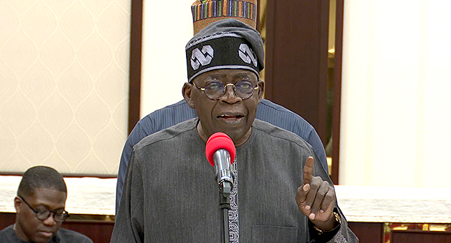

Labour leaders said the meeting with President Tinubu was not for negotiations.
Story by Premium Times Abuja
President Bola Tinubu has welcomed the decision of the Supreme Court of Nigeria, affirming the spirit, intent, and purpose of the Constitution of the Federal Republic of Nigeria on the statutory rights of local governments
The president stated that a fundamental challenge to the nation's advancement over the years has been ineffective local government administration, as governance at the critical cellular level of socio-political configuration is nearly absent.
He emphasised that the onus is now on local council leaders to ensure that the broad spectrum of Nigerians living at that level are satisfied that they are benefitting from people-oriented service delivery.
Advertisement
The Renewed Hope Agenda is about the people of this country, at all levels, irrespective of faith, tribe, gender, political affiliation, or any other artificial line they say exists between us..
"This country belongs to all of us. By virtue of this judgement, our people - especially the poor - will be able to hold their local leaders to account for their actions and inactions. What is sent to local government accounts will be known, and services must now be provided without excuses.
"My administration instituted this suit because of our unwavering belief that our people must have relief, and today's judgement will ensure that it will be only those local officials elected by the people that will control the resources of the people.
"This judgement stands as a resounding affirmation that we can use legitimate means of redress to restructure our country and restructure our economy to make Nigeria a better place to live in and a fairer society for all of our people," the president said.
President Tinubu noted that the provision of some essential amenities and public goods, such as the construction and maintenance of certain roads, streets, street lighting, drains, parks, gardens, open spaces, and other residual responsibilities, including community security, has tottered owing to the emasculation of local governments.
The president affirmed that the decision of the Supreme Court to uphold the constitutional rights and ideals of local governments as regards financial autonomy and other salient principles is of historic significance and further reinforces the effort to enhance Nigeria's true federal fabric for the development of the entire nation.
Kenya Ruto Dismisses All The Entire Cabinet After Deadly Protest
Appeal Court Affirms Ododo's Election As Kogi Gov